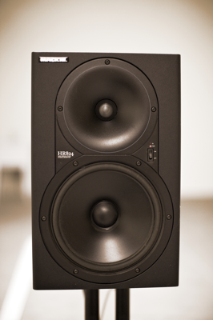
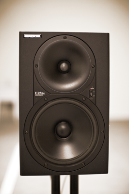
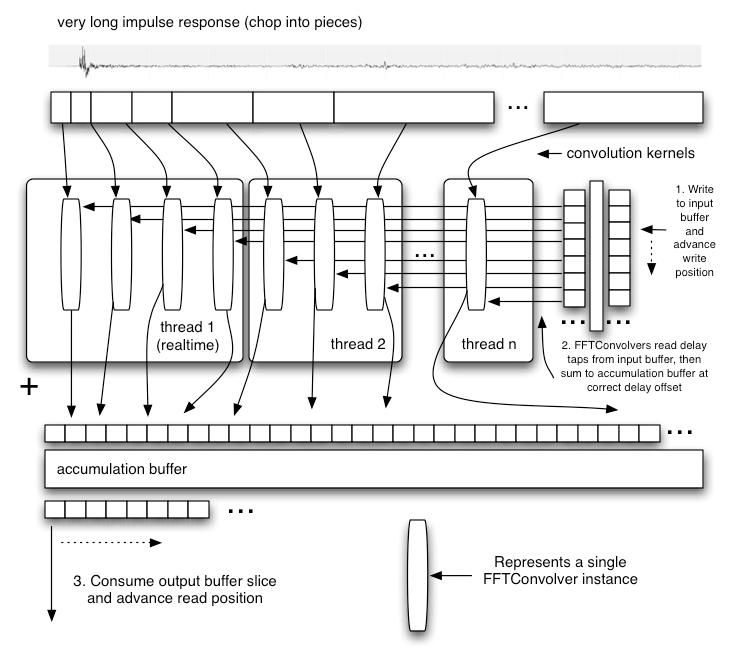
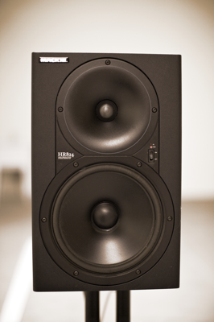

Microphones: AKG 414s, Speaker: Mackie HR824

Microphones: AKG 414s, Speaker: Mackie HR824
This section is informative and may be helpful to implementors
A convolution reverb can be used to simulate an acoustic space with very high quality. It can also be used as the basis for creating a vast number of unique and interesting special effects. This technique is widely used in modern professional audio and motion picture production, and is an excellent choice to create room effects in a game engine.
Creating a well-optimized real-time convolution engine is one of the more challenging parts of the Web Audio API implementation. When convolving an input audio stream of unknown (or theoretically infinite) length, the overlap-add approach is used, chopping the input stream into pieces of length L, performing the convolution on each piece, then re-constructing the output signal by delaying each result and summing.

Direct convolution is far too computationally expensive due to the extremely long impulse responses typically used. Therefore an approach using FFTs must be used. But naively doing a standard overlap-add FFT convolution using an FFT of size N with L=N/2, where N is chosen to be at least twice the length of the convolution kernel (zero-padding the kernel) to perform each convolution operation in the diagram above would incur a substantial input to output pipeline latency on the order of L samples. Because of the enormous audible delay, this simple method cannot be used. Aside from the enormous delay, the size N of the FFT could be extremely large. For example, with an impulse response of 10 seconds at 44.1Khz, N would equal 1048576 (2^20). This would take a very long time to evaluate. Furthermore, such large FFTs are not practical due to substantial phase errors.
There exist several clever tricks which break the impulse response into smaller pieces, performing separate convolutions, then combining the results (exploiting the property of linearity). The best ones use a divide and conquer approach using different size FFTs and a direct convolution for the initial (leading) portion of the impulse response to achieve a zero-latency output. There are additional optimizations which can be done exploiting the fact that the tail of the reverb typically contains very little or no high-frequency energy. For this part, the convolution may be done at a lower sample-rate...
Performance can be quite good, easily done in real-time without creating undo stress on modern mid-range CPUs. A multi-threaded implementation is really required if low (or zero) latency is required because of the way the buffering / processing chunking works. Achieving good performance requires a highly optimized FFT algorithm.
It should be noted that a convolution reverb typically involves two convolution operations, with separate impulse responses for the left and right channels in the stereo case. For 5.1 surround, at least five separate convolution operations are necessary to generate output for each of the five channels.
Similar to other assets such as JPEG images, WAV sound files, MP4 videos, shaders, and geometry, impulse responses can be considered as multi-media assets. As with these other assets, they require work to produce, and the high-quality ones are considered valuable. For example, a company called Audio Ease makes a fairly expensive ($500 - $1000) product called Altiverb containing several nicely recorded impulse responses along with a convolution reverb engine.
The FFTConvolver is able to do short convolutions with the FFT size N being at least twice as large as the
length of the short impulse response. It incurs a latency of N/2 sample-frames. Because of this latency and performance considerations,
it is not suitable for long convolutions. Multiple instances of this building block can be used to perform extremely long convolutions.
ReverbConvolver is able to perform extremely long real-time convolutions on a single audio channel.
It uses multiple FFTConvolver objects as well as an input buffer and an accumulation buffer. Note that it's
possible to get a multi-threaded implementation by exploiting the parallelism. Also note that the leading sections of the long
impulse response are processed in the real-time thread for minimum latency. In theory it's possible to get zero latency if the
very first FFTConvolver is replaced with a DirectConvolver (not using a FFT).

The most modern and accurate way to record the impulse response of a real acoustic space is to use a long exponential sine sweep. The test-tone can be as long as 20 or 30 seconds, or longer.
Several recordings of the test tone played through a speaker can be made with microphones placed and oriented at various positions in the room. It's important to document speaker placement/orientation, the types of microphones, their settings, placement, and orientations for each recording taken.
Post-processing is required for each of these recordings by performing an inverse-convolution with the test tone, yielding the impulse response of the room with the corresponding microphone placement. These impulse responses are then ready to be loaded into the convolution reverb engine to re-create the sound of being in the room.
Two command-line tools have been written:
generate_testtones generates an exponential sine-sweep test-tone and its inverse. Another
tool convolve was written for post-processing. With these tools, anybody with recording equipment can record their own impulse responses.
To test the tools in practice, several recordings were made in a warehouse space with interesting
acoustics. These were later post-processed with the command-line tools.
% generate_testtones -h
Usage: generate_testtone
[-o /Path/To/File/To/Create] Two files will be created: .tone and .inverse
[-rate <sample rate>] sample rate of the generated test tones
[-duration <duration>] The duration, in seconds, of the generated files
[-min_freq <min_freq>] The minimum frequency, in hertz, for the sine sweep
% convolve -h
Usage: convolve input_file impulse_response_file output_file

Microphones: AKG 414s, Speaker: Mackie HR824